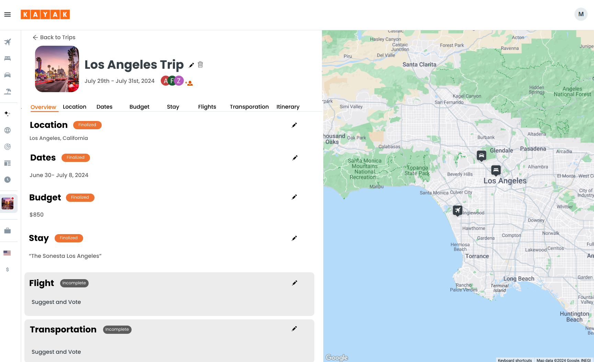
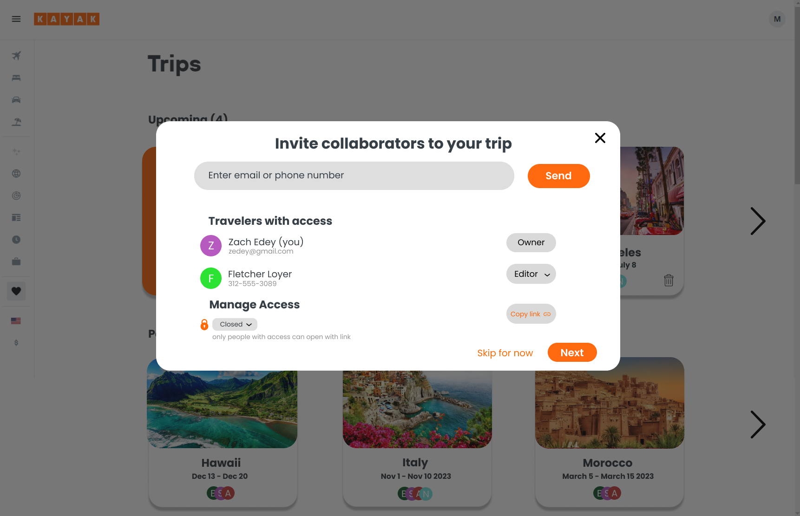
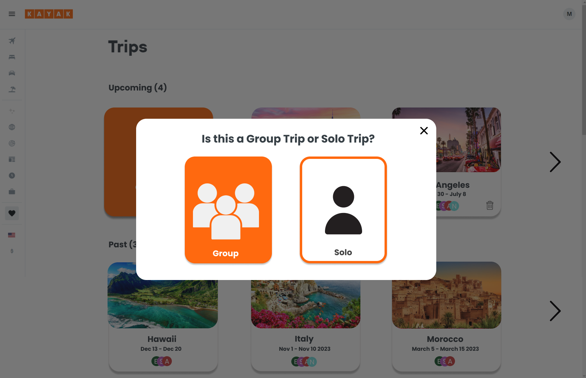
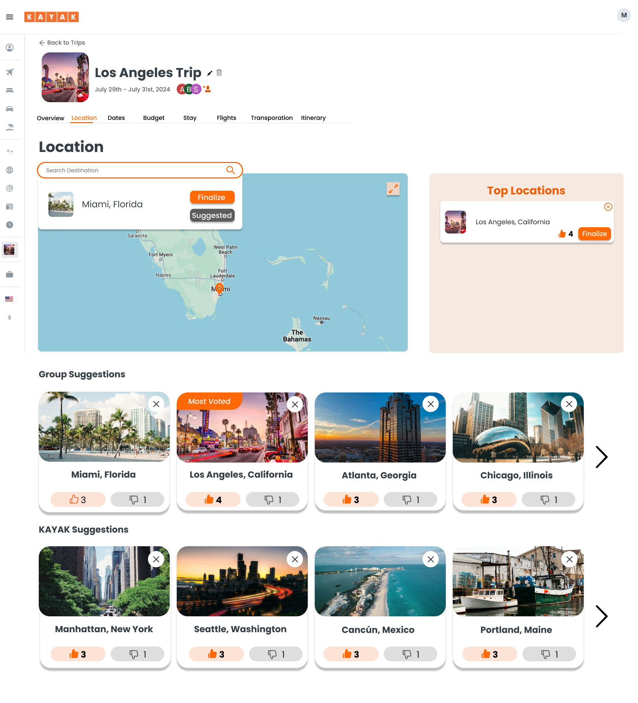
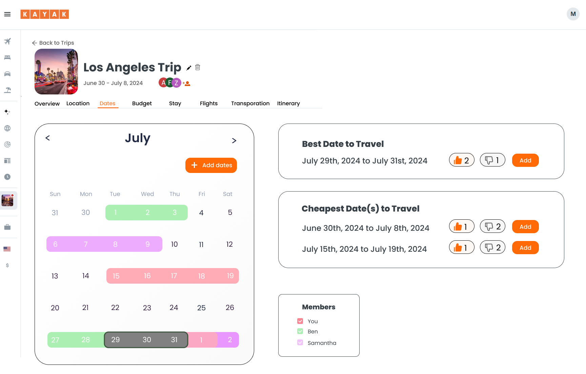
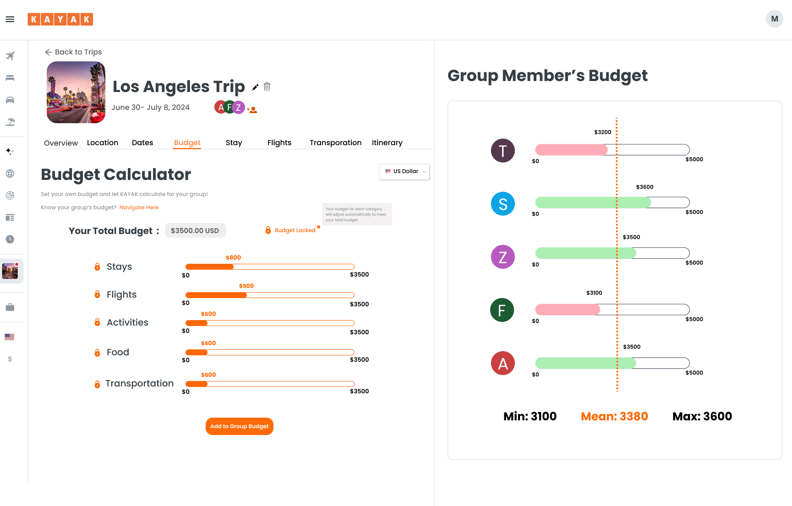
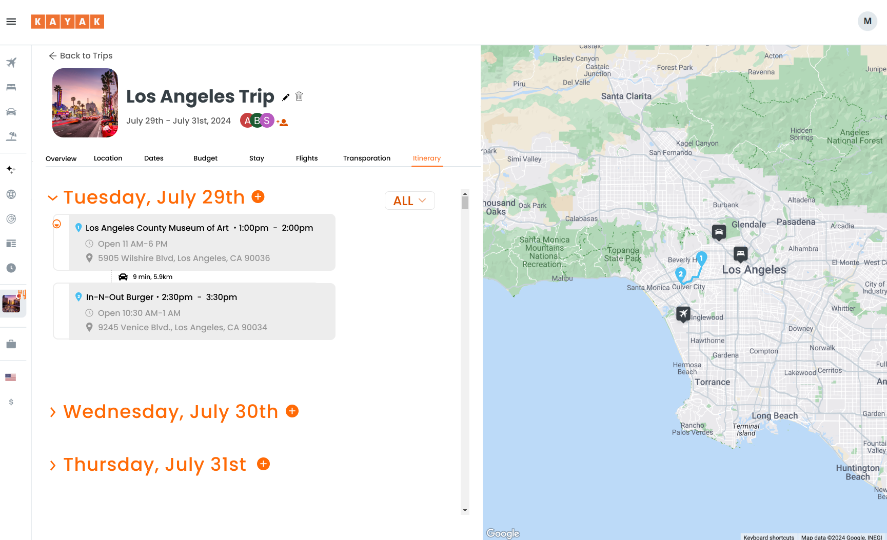
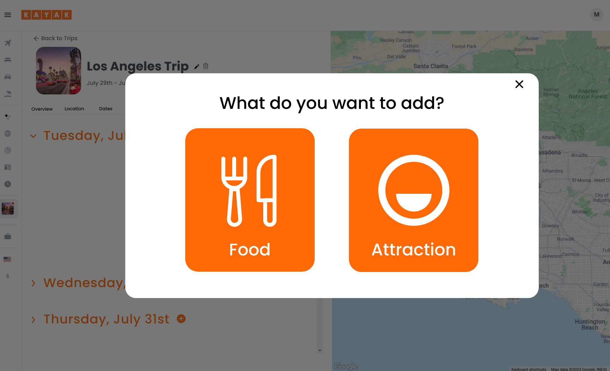

Kayak · Travel · Sponsored project
Bringing group travel to Kayak
Planning a trip with friends means juggling budget, dates, and location across scattered chats, and Kayak has no group travel features today. I led a team of nine UX designers through research to design them.

Overview
KAYAK is a travel metasearch engine for flights, hotels, rental cars, and vacation packages. The goal: group travel features for its website, for a better desktop experience.
The problem
One person usually leads planning, and price, location, and safety matter most. Group members often search at the same time for the "best deal," so it's hard to compromise on budget, location, and dates. Flexibility and privacy suffer, and communication is hard to manage. Today, KAYAK has nothing to support this.
where do u wanna go?
Mayaidk somewhere warm?
what do u wanna spend?
Jessunder $500??
Mayathat's not gonna work lol
when are u free
Mayanot june
Jessi'm only free in june 😭
The most important part of planning a trip is also the most complicated: budget, dates, and location.
Process
Milestone 1Who is the primary user?
18 interviews with potential users across friend groups and families showed who would adopt group planning first. Older Gen Z and Millennials emerged as the primary users, so the design focused on them. The next question: how do they actually plan?
9 friend groups, 9 families
2 interviews each
friends and family
Groups lean on one organizer and talk mostly by text. So the design gives every member a voice through suggestions and voting, while one admin keeps the final say.
Milestone 2How do groups travel?
With the user defined, a contextual inquiry with a friend group and a team workshop showed that planning is non-linear: budget, dates and location shape one another.

Budget, dates and location are decided together: people start with location but revise it when the budget does not fit. So the trip overview shows all three as linked tabs, with location first.
Milestone 3How can KAYAK improve?
Knowing how groups plan, the next step was to find where KAYAK falls short. Three steps turned that into a feature direction. Pick a stop to explore it.
01Competitive analysisCompetitors had shared calendars, voting and map itineraries that KAYAK lacked.
Eight competitors across trip planning and booking were reviewed for the group features they offer.
02Heuristic evaluationGroup planning was buried, and hotels could not be saved to a trip.

- Hidden entry point"Create Trip" sat in a corner menu.
- Limited itinerary searchActivities searched by location only, with no dates or times.
- Dead-end adsHotel ads could not be saved to a trip.
03Feature sketchingSketches for a shared calendar, group budget and location map.


Competitors had voting and shared expenses, but KAYAK hid even "Create Trip". So collaboration, voting and group budgets became core features, easy to find.
Milestone 4Design and test
Those features became a prototype, then went to users for testing. Concept testing confirmed one direction and exposed one problem.

The solution
Each finding above shaped a decision in the final desktop design:
- Change any part of the trip at any time. Planning is non-linear, so nothing is locked in.
- Suggest and vote. One organizer usually decides, so every member can suggest a destination for the group to vote on.
- Individual and group budgets. Budget drives location and dates, so each person sees their own breakdown as well as the group's.
Start a trip
Choose a group or solo trip up front, so planning together is the default rather than an afterthought.

Invite
Invite friends as editors or viewers, so everyone knows who can change the plan.
Overview
Every part of the trip sits in one linked view with a clear status, and any part can be changed at any time.
Location
Members suggest destinations on a map, then the group votes and the organizer finalizes.

Dates
A shared calendar shows each member in their own color, so overlapping availability is easy to spot.

Budget
Each person sets their own budget by category, then sees how it compares across the group.

Itinerary
The trip laid out day by day, alongside the map.

Add activity
Anyone can add food or an attraction to a day, without leaving the itinerary.

Try the interactive prototype in Figma ↗
Impact & learnings
My impact
- Led the team: I led UX designers with varying skill levels through mentorship and collaboration.
- Led stakeholder meetings to gather feedback and stay aligned.
- Redesigned core features from user insights.
- Planned and conducted usability tests.
What I learned
- Balancing user needs and business goals: prioritizing the changes with the greatest impact on both.
- Design consistency: keeping patterns and visual language cohesive across features.
- Agile design: iterating quickly in a fast-paced, cross-functional workflow.
Limitations & next steps
The design didn't cover kids or pets, KAYAK is a metasearch with no direct booking, and voting was under-tested. Next I'd test voting on stays, flights and transportation, and test within KAYAK's design system.
Next project